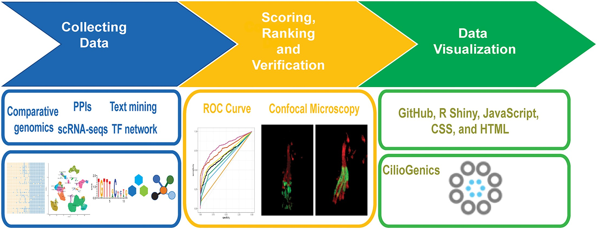
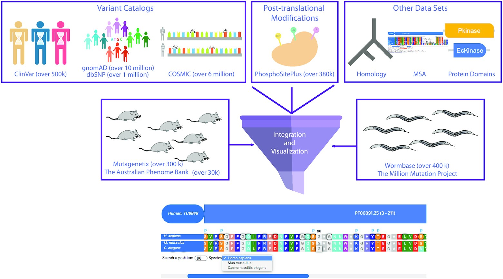

Cilia are microtubule-based cellular projections essential for a wide range of biological processes. They function in sensory perception, detecting chemical, mechanical, and light stimuli, and drive fluid movement across cell surfaces. Additionally, cilia enable cellular motility and play a crucial role in embryonic development by orchestrating molecular signaling, receiving and transmitting signals vital for proper development and homeostasis. Dysfunction of cilia leads to a variety of diseases, known as ciliopathies. Kaplan's lab aims to unravel the mechanisms governing cilia function, including intraflagellar transport (IFT) and the impact of genetic variants, to better understand and ultimately treat these debilitating diseases.
Research Updates

Pir MS, Cevik S, Kaplan OI. Nucleic Acids Res.


Pir MS, Cevik S, Kaplan OI. Nucleic Acids Res.
Turan MG, Kantarci H, Cevik S, Kaplan OI. "ARL13B regulates juxtaposed cilia-cilia elongation in a BBSome-dependent manner in Caenorhabditis elegans." iScience.
We discovered that ARL13B plays a crucial role in coordinating the elongation of adjacent cilia through interactions with the BBSome complex. Our research sheds light on how ciliary membrane regulation contributes to ciliogenesis and ciliopathy pathogenesis.